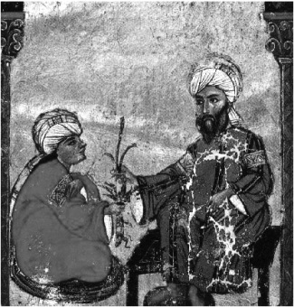

ŞEKİL 3. Dioskorides efsanevî bitki adamotunu öğrencilerinden birine verirken: Söylentiye göre adamotu topraktan çıkarıldığı zaman öyle acı feryat edermiş ki bunu duyanın kulakları sağır olur, ölür ya da delirirmiş. Bu nedenle adamotunu topraktan çekip çıkarmak için kök, bir köpeğe bağlanır, köpeğin sahibi uzaktan hayvanı çağırır, adamotu ile birlikte gelen hayvan ise kıvranarak ölürmüş. Çıkan korkunç sesleri örtmek için teneke çalındığı da olurmuş. Bu resmi yapan Müslüman sanatçının, Bizans resim stilinden etkilendiğini anlaşılmaktadır (Dioskorides’in Kitab el-Haşâyiş adı altında Arapça’ya çevrilen eserinin Topkapı Sarayı Kütüphanesi’nde bulunan, 1229 tarihli bir Musul / Irak yazımı nüshasından).
“Mandragora” teriminin dilsel kökeni, Farsça “mardom-gijah” (“adam otu”) ya da “mehr-gijah” (“sevgi otu”) sözcüklerinden gelir. Başka bir yorum olarak Yunanca “mandra-agora”dan (“ahır toplantısı”) (!) geldiği de ileri sürülmektedir. “Ejderha insan” [< “man” + “dragon”] şeklinde yorumlayanlar da vardır. Ermenice’de “Adamowa golowa” (“Âdem’in başı”) adını alırken Arapça’da “şeytan elması” şeklinde yer alır. İÖ 1550’lere tarihlenen Ebers Papirüsü’nde adamotu narkotik ve solucan düşürücü, sancı dindirici, kramp önleyici olarak ve akciğer hastalıklarına karşı önerilmektedir. Mısır mitolojisine göre Nübye’den getirilmiş mandragora meyvesi, bira içinde bir tanrıçaya sunulmuş, tanrıça bunu içince sarhoş olarak gözleri parlamaya başlamış ve güneş battıktan sonra da gözleri görmez olmuş –burada bitkinin içeriğindeki bir alkaloidin gözbebeklerini büyütücü etkisine değinilmektedir–. Adamotu daha sonra modern psiko-farmakaların öncüsü olarak bilinç kaybettiren ecza olarak da kullanılmıştır. Bizzat adamotunun kendisinin de geceleri tıpkı ay ya da ateşböceği gibi ışıl ışıl parladığı söylenir ki ona yakıştırılan bu özellik bir boşinançtan ibarettir. “Adamotu” nitelemesi, insana benzerliğinin yanı sıra onun afrodizyak olarak kullanımıyla da ilişkilendirilmektedir. Eski Yunan ve Roma tedavi sanatında sistemli olarak melankoliye, ateş yükselmesine ve kadın hastalıklarına karşı kullanılmıştır. Dioskorides, De materia medica’sında bu bitkiyi betimleyerek, iki türünü ayırt etmiştir: İlkbaharda yetişen, büyük, erkek biçiminde, açık renkli ve güzel kokulu olan (olasılıkla “Mandragora vernalis L.”); diğeri ise sonbaharda yetişen, küçük, kadın biçiminde, koyu renkli ve iğrenç ve keskin kokulu olan (olasılıkla “Mandragora officinarum”). Askerî hekim olarak çok sayıda cerrahî müdahalede bulunan Dioskorides onu şarap içinde ve narkoz aracı olarak kullanmış; az verildiğinde uyku getirici, çok verildiğinde ise bilinç yitirici ve hattâ öldürücü etkiye sahip olduğunu belirtmiştir (ŞEKİL 4, ŞEKİL 5).29